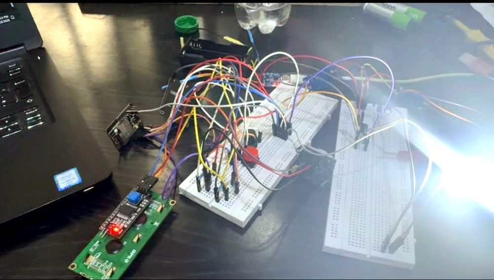
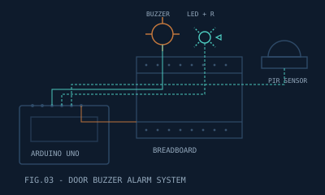
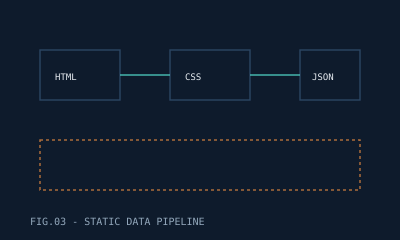

04 Projects
Selected Projects
Computer vision and embedded systems projects, built hands on. Click a project for the full write up.

Computer Vision · 2025-11Facial Recognition Attendance System
An attendance system that recognises student faces at the door and logs them automatically, so nobody's stuck chasing a paper sign-in sheet.
Python · OpenCV · Facial Recognition
Details AI / ML · 2025-08
AI / ML · 2025-08
Bear Detection System (YOLO)
A YOLO-based detector trained to spot bears in image and video feeds, built and evaluated as a hands-on computer vision project.
Python · YOLO · Computer Vision
Details
Embedded Systems · 2025-04Door Buzzer Alarm System
A microcontroller-driven door alarm that sounds a buzzer the moment someone tries the door without authorisation, built as a hands-on embedded systems project.
Arduino · Sensors · Embedded C
Details
Web · 2025-03Static Site Data Pipeline
The same no-JavaScript approach behind this portfolio itself: semantic HTML5 and CSS3, driven entirely by a JSON content model.
HTML5 · CSS3 · JSON
Details